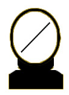

Bienvenu au Loto
Si 1 numéro sur
5
est tiré vous remportez 1x la mise
Si 2 numéros 2x, 3 numéros 3x, 4 numéros 4x
Si 5 numéros 10x la mise
Si aucun numéro n’est tiré, vous perdez la mise.
Votre mise en € (un ch iffre entre 1 et 100) ?
--> Mise" type='number' step="10" min="1" max="100">
--> l">
×

Gains:
0